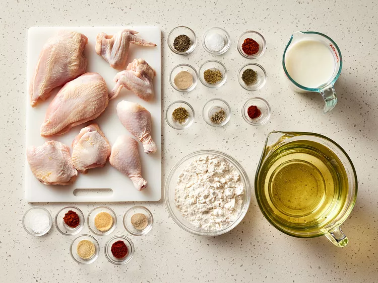
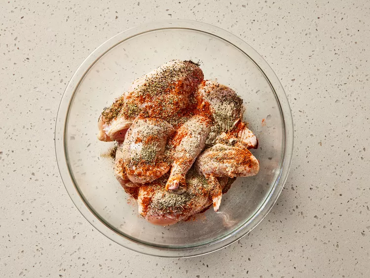
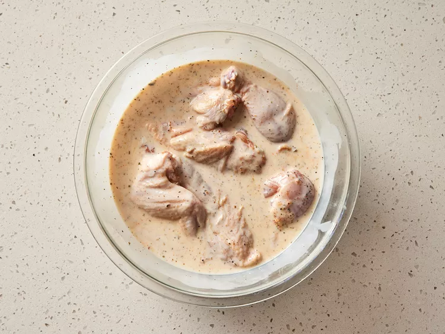
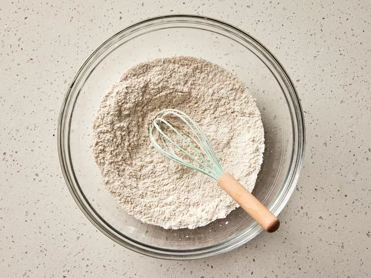
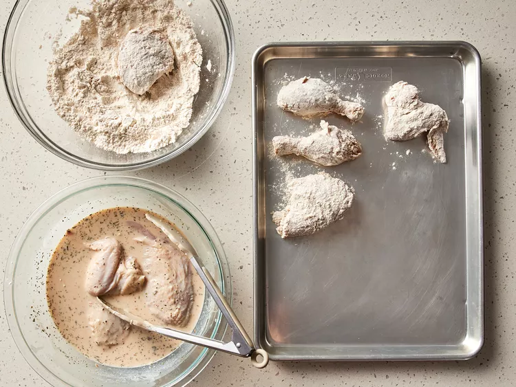
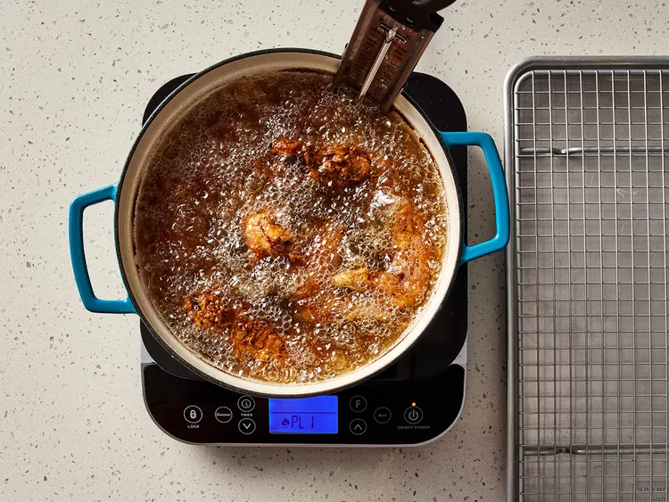
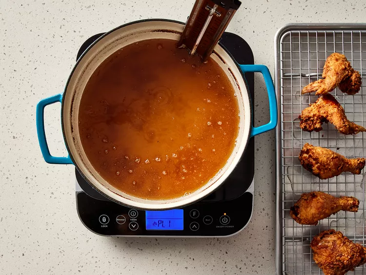

Buttermilk fried chicken that's incredibly tender, thanks to tangy buttermilk. After the buttermilk soak, dredge the chicken pieces in seasoned flour and fry them in hot oil until crisp and golden.
This buttermilk fried chicken recipe delivers chicken that’s wonderfully crispy on the outside and tender and juicy on the inside. Marinating the chicken in buttermilk not only adds tangy flavor, but also helps tenderize the meat, while its acidity ensures a beautifully crisp crust.
These are the ingredients you’ll need to make this buttermilk fried chicken recipe:
Yes, you can freeze buttermilk fried chicken for up to six months. Start by spreading the pieces on a flat surface in your freezer, such as a baking tray. This step prevents the pieces of chicken from sticking to each other. Once they are frozen on the outside, combine them in a zip-top bag or other freezer-friendly airtight container.
When ready to use, preheat the oven or air fryer to 400 degrees F (200 C) - the hot temperature will help keep the outside layer crispy. Warm until heated through.
No. Using milk instead of buttermilk will not have the same effect. However, it’s easy enough to make homemade buttermilk at home. Simply add two tablespoons of lemon juice to two cups of milk. You can use vinegar instead of lemon juice, if you prefer.
Check out our collection of 15 Classic Side Dishes for Fried Chicken for delicious serving inspiration. Here's are a few of the top-rated recipes you’ll find:
Let the fried chicken cool, then place it in a shallow airtight container or wrap it tightly in aluminum foil. Refrigerate for up to four days.
To reheat fried chicken in the oven, place it on a baking sheet (preferably on a wire rack) and warm at 375 degrees F (190 degrees C) until heated through and the coating is crisp, about 15 to 20 minutes. You can also reheat it in the microwave, though the crispy coating may soften slightly.
“This was a very good and easy to follow recipe,” raves walshpj. “I used boneless chicken breasts, so I adjusted the cooking time. My family loved it.”
“Great fried chicken,” according to Glen C. “This was the first time I've tried to fry chicken and it came out beautifully. I did increase the seasonings, only because I like spicy food (I used a tablespoon of cayenne pepper) and it turned out terrific.”
“DELICIOUS,” says CookingJewel. “Moist, flavorful chicken with a tasty, crispy coating. WOW! We enjoyed this recipe so much, it's a keeper!”
Editorial contributions by Corey Williams
Gather all ingredients.

Toss chicken pieces, black pepper, salt, paprika, white pepper, rosemary, thyme, oregano, sage, and cayenne together in a large bowl.

Stir in buttermilk until chicken is evenly coated. Cover and refrigerate for 6 hours.

Combine flour, salt, paprika, cayenne, garlic powder, white pepper, and onion powder in a large shallow dish.

Remove chicken from buttermilk and dredge each piece in seasoned flour; shake off any excess and transfer to a plate.

Heat peanut oil in a large Dutch oven to 350 degrees F (175 degrees C).
Add chicken pieces to the hot oil and fry for 10 minutes. Turn chicken pieces and fry for another 10 to 15 minutes. An instant-read thermometer inserted near the bone should read 165 degrees F (74 degrees C).

Transfer fried chicken to a cooling rack set over a paper towel-lined baking sheet. Let sit for 10 minutes before serving.

The oil is 350 degrees F (175 degrees C) to start, but it may drop to about 300 degrees (150 degrees C) when chicken is added. It should rise back to 305 to 310 degrees F (151 to 155 degrees C) and be held at that temperature until done, about 25 minutes.